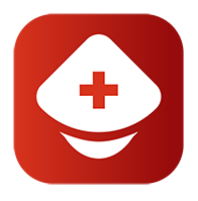

Listed as accordion with first two accordion items open
Acupuncture: Donors who have undergone acupuncture treatments are acceptable.
Age: You must be at least 18 years old to donate to the general blood supply, or under 18 years old
with parental/guardian consent, if allowed by state law. There is no upper age limit for blood donation if
you are well with no restrictions or limitations to your activities.
In-Depth Discussion of Age and Blood Donation:
Those younger than age 18 are almost always legal minors.
Persons under the age of 18 may, however, donate blood for their own use, in advance of
scheduled surgery or in situations where their blood has special medical value for a patient
such as a family member.
Allergy, Stuffy Nose, Itchy Eyes, Dry Cough:
Acceptable if you feel well, have no fever, and have no problems breathing through your mouth.
Antibiotics: A donor with an acute infection should not donate. The reason for antibiotic use must
be evaluated to determine if the donor has a bacterial infection that could be transmissible by blood.
Acceptable after finishing oral antibiotics for an infection (bacterial or viral). May have taken last pill on the
date of donation. Antibiotic by injection for an infection acceptable 10 days after last injection. Acceptable
if you are taking antibiotics to prevent an infection for the following reasons: acne, chronic prostatitis,
peptic ulcer disease, periodontal disease, pre-dental work, rosacea, ulcerative colitis, after a splenectomy or
valvular heart disease. If you have a temperature above 37.5 °C, you may not donate.
Aspirin: No waiting period for donating whole blood. However, you must wait 2 days (3 days if you
donate in New York State) after taking aspirin or any medication containing aspirin before donating
platelets by apheresis.
Asthma: Acceptable as long as you do not have any limitations on daily activities and are not having
difficulty breathing at the time of donation and you otherwise feel well. Medications for asthma do not
disqualify you from donating.
Birth Control: Women on oral contraceptives or using other forms of birth control are eligible to
donate.
Bleeding Condition: If you have a history of bleeding problems, you will be asked additional
questions. If your blood doesn't clot normally, you should not donate since you may have excessive bleeding
where the needle was placed. For the same reason, you should not donate if you are taking any "blood
thinner" such as:
Atrixa (fondaparinu)
Coumadin (warfarin)
Eliquis (apixaban)
Fragmin (dalteparin)
Heparin
Jantoven (warfarin)
Lovenox (enoxaparin)
Pradaxa (dabigatran)
Savaysa (edoxaban)
Warfilone (warfarin)
Xarelto (rivaroxaban).
Donors with clotting disorder from Factor V who are not on anticoagulants are eligible to donate; however,
all others must be evaluated by the health historian at the collection center.
Blood Pressure, High: Acceptable if your blood pressure is below 180 systolic (first number) and
below 100 diastolic (second number) at the time of donation. Medications for high blood pressure do not
disqualify you from donating.
Blood Pressure, Low: Acceptable if you feel well when you come to donate, and your blood pressure
is at least 90/50 (systolic/diastolic).
Cancer: Eligibility depends on the type of cancer and treatment history. If you had leukemia or
lymphoma, including Hodgkin’s Disease and other cancers of the blood, you are not eligible to donate.
Other types of cancer are acceptable if the cancer has been treated successfully and it has been more than
12 months since treatment was completed and there has been no cancer recurrence in this time. Lower risk
in-situ cancers including squamous or basal cell cancers of the skin that have been completely removed do
not require a 12-month waiting period.
Precancerous conditions of the uterine cervix do not disqualify you from donation if the abnormality has
been treated successfully. You should discuss your situation with the health historian at the time of
donation.
Chronic Illnesses: Most chronic illnesses are acceptable as long as you feel well, the condition is
under control, and you meet all other eligibility requirements.
Cold, Flu: Wait if you have a fever or a productive cough (bringing up phlegm). Wait if you do not
feel well on the day of donation. Wait until you have completed antibiotic treatment for sinus, throat or
lung infection.
Dental Procedures and Oral Surgery: Acceptable after dental procedures as long as there is no
infection present. Wait until finishing antibiotics for a dental infection. Wait for 3 days after having oral
surgery.
Diabetes: Diabetics who are well controlled on insulin or oral medications are eligible to donate.
Donation Intervals:
Wait at least 8 weeks between whole blood (standard) donations.
Wait at least 7 days between platelet (pheresis) donations.
Wait at least 16 weeks between Power Red (automated) donations.
Heart Disease: In general, acceptable if you have been medically evaluated and treated, have no
current (within the last 6 months) heart related symptoms such as chest pain and have no limitations or
restrictions on your normal daily activities.
Wait at least 6 months following an episode of angina.
Wait at least 6 months following a heart attack.
Wait at least 6 months after bypass surgery or angioplasty.
Wait at least 6 months after a change in your heart condition that resulted in a change to your
medications.
If you have a pacemaker, you may donate as long as your pulse is between 50 and 100 beats per
minute and you meet the other heart disease criteria. You should discuss your particular situation
with your personal healthcare provider and the health historian at the time of donation
Heart Murmur, Heart Valve Disorder: Acceptable if you have a heart murmur as long as you have
been medically evaluated and treated and have not had symptoms in the last 6 months, and have no
restrictions on your normal daily activities.
Height and Weight Requirements
Female Donors: Female donors who are 18 years old and younger must weigh 110 lbs. or
more, depending on their height. See chart below:
Male Donors: Male donors who are 18 years old and younger must weigh 110 lbs. or more,
depending on their height. See chart below:
Hemoglobin, Hematocrit, Blood Count: To donate blood, a woman must have a hemoglobin level
of at least 12.5 g/dL, and a man must have a hemoglobin level of at least 13.0 g/dL. For all donors, the
hemoglobin level can be no greater than 20 g/dL. Separate requirements for hemoglobin level apply
for Power Red.
Hepatitis, Jaundice: If you have signs or symptoms of hepatitis (inflammation of the liver) caused
by a virus, or unexplained jaundice (yellow discoloration of the skin), you are not eligible to donate
blood. If you ever tested positive for hepatitis B or hepatitis C, at any age, you are not eligible to
donate, even if you were never sick or jaundiced from the infection.
Hepatitis Exposure: If you live with or have had sexual contact with a person who has hepatitis, you
must wait 12 months after the last contact.
Persons who have been detained or incarcerated in a facility (juvenile detention, lockup, jail, or
prison) for more than 72 consecutive hours (3 days) are deferred for 12 months from the date of last
occurrence. This includes work release programs and weekend incarceration. These persons are at
higher risk for exposure to infectious diseases.
Wait 12 months after receiving a blood transfusion (unless it was your own "autologous" blood),
non-sterile needle stick or exposure to someone else's blood.
HIV, AIDS: You should not give blood if you have AIDS or have ever had a positive HIV test, or if
you have done something that puts you at risk for becoming infected with HIV.
You are at risk for getting infected if you:
have ever used needles to take any drugs, steroids, or anything not prescribed by your doctor
are a male who has had sexual contact with another male, in the last 12 months
have ever taken money, drugs or other payment for sex
have had sexual contact in the past 12 months with anyone described above
You should not give blood if you have any of the following conditions that can be signs or
symptoms of HIV/AIDS:
Fever
Enlarged lymph glands
Sore throat
Rash
Hormone Replacement Therapy (HRT): Women on hormone replacement therapy for menopausal
symptoms and prevention of osteoporosis are eligible to donate.
Hypertension, High Blood Pressure: See High Blood Pressure section above.
Immunization, Vaccination: Acceptable if you were vaccinated for influenza, tetanus or
meningitis, providing you are symptom-free and fever-free. Includes the Tdap vaccine. Acceptable if
you received an HPV Vaccine (example, Gardasil).
Wait 4 weeks after immunizations for German measles (Rubella), MMR (Measles, Mumps and
Rubella), Chicken Pox and Shingles.
Wait 2 weeks after immunizations for Red Measles (Rubeola), Mumps, Polio (by mouth), and Yellow
Fever vaccine.
Wait 21 days after immunization for hepatitis B if you are not given the immunization for exposure
to hepatitis B.
Smallpox vaccination and did not develop complications Wait 8 weeks (56 days) from the date of
having a smallpox vaccination if you have had no complications. Complications may include skin
reactions beyond the vaccination site or general illness related to the vaccination.
Smallpox vaccination and developed complications Wait 14 days after all vaccine complications
have resolved or 8 weeks (56 days) from the date of having had the smallpox vaccination whichever is
the longer period. You should discuss your situation with the health historian at the time of
donation. Complications may include skin reactions beyond the vaccination site or general illness
related to the vaccination.
Smallpox vaccination – close contact with someone who has had the smallpox vaccine in the last
eight weeks and you did not develop any skin lesions or other symptoms. Eligible to donate.
You have since developed skin lesions or symptoms. Wait 8 weeks (56 days) from the date of
the first skin lesion or sore. You should discuss your situation with the health historian at
the time of donation. Complications may include skin reactions or general illness related to
the exposure.
Infections: If you have a fever or an active infection, wait until the infection has resolved completely
before donating blood.
Wait until finished taking antibiotics for an infection (bacterial or viral).
Wait 10 days after the last antibiotic injection for an infection.
Those who have had infections with Chagas Disease, Babesiosis or Leishmaniasis are not eligible to donate.
See: Antibiotics, Hepatitis, HIV, Syphilis/Gonorrhea, and Tuberculosis.
Organ/Tissue Transplants: Wait 12 months after receiving any type of organ transplant from
another person. If you ever received a dura mater (brain covering) transplant, you are not eligible to
donate. This requirement is related to concerns about the brain disease, Creutzfeld-Jacob Disease
(CJD).
Piercing (ears, body), Electrolysis: Acceptable if the instruments used were single-use equipment.
Wait 12 months if a piercing was performed using a reusable gun or any reusable instrument.
Wait 12 months if there is any question whether the instruments used were single-use equipment.
This requirement is related to concerns about hepatitis.
Pregnancy, Nursing: Persons who are pregnant are not eligible to donate. Wait 6 weeks after giving
birth.
Sexually Transmitted Disease: Wait 12 months after treatment for syphilis or gonorrhea.
Acceptable if it has been more than 12 months since you completed treatment for syphilis or
gonorrhea.
Chlamydia, venereal warts (human papilloma virus), or genital herpes are not a cause for deferral if
you are feeling healthy and well and meet all other eligibility requirements.
Sickle Cell: Acceptable if you have sickle cell trait. Those with sickle cell disease are not eligible to
donate.
Skin Disease, Rash, Acne: Acceptable as long as the skin over the vein to be used to collect blood is
not affected. If the skin disease has become infected, wait until the infection has cleared before
donating. Taking antibiotics to control acne does not disqualify you from donating.
Surgery: It is not necessarily surgery but the underlying condition that precipitated the surgery that
requires evaluation before donation. Evaluation is on a case by case basis. You should discuss your
situation with the health historian at the time of donation.
Syphilis/Gonorrhea Wait 12 months after being treated for syphilis or gonorrhea.
Tattoo: Wait 12 months after a tattoo if the tattoo was applied in a state that does not regulate
tattoo facilities.
Tuberculosis: If you have active tuberculosis or are being treated for active tuberculosis you should
not donate. Acceptable if you have a positive skin test or blood test, but no active tuberculosis and
are NOT taking antibiotics. If you are receiving antibiotics for a positive TB skin test or blood test
only or if you are being treated for a tuberculosis infection, wait until treatment is successfully
completed before donating.
